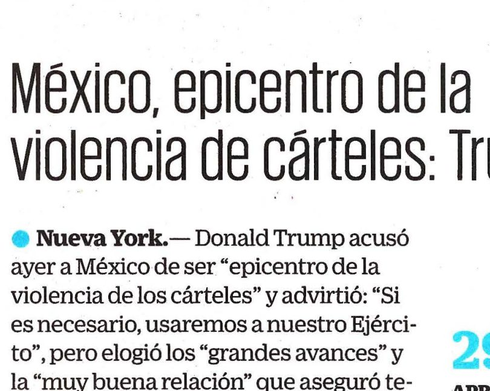
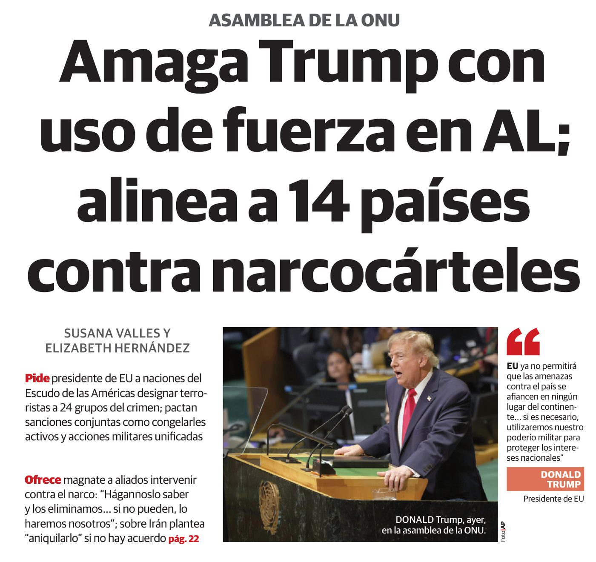
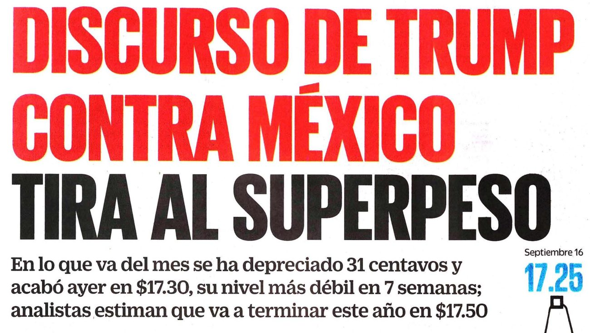
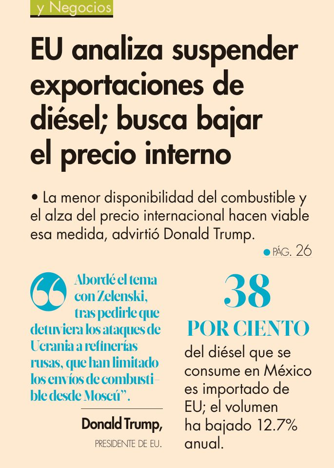
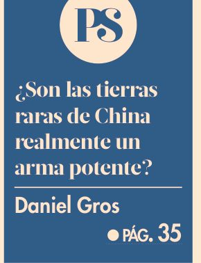
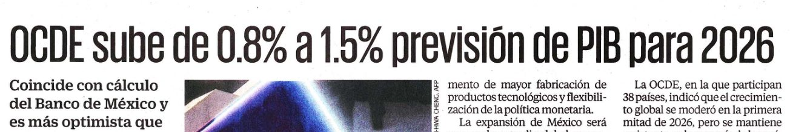
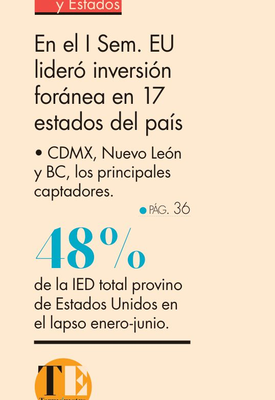
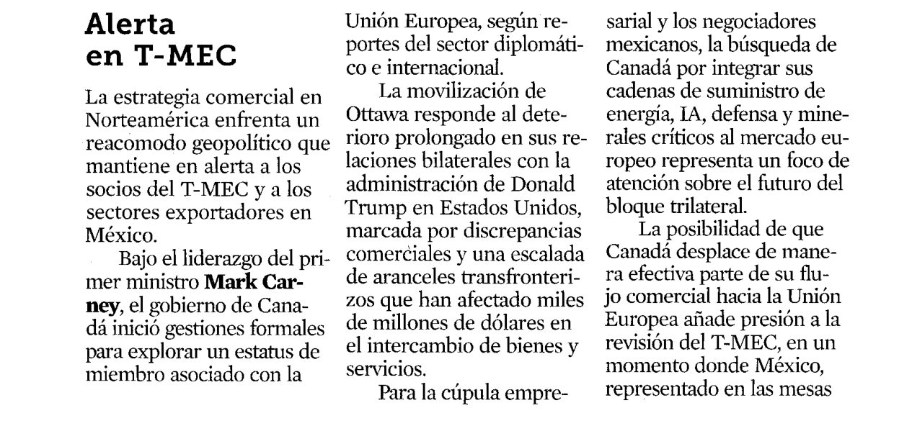
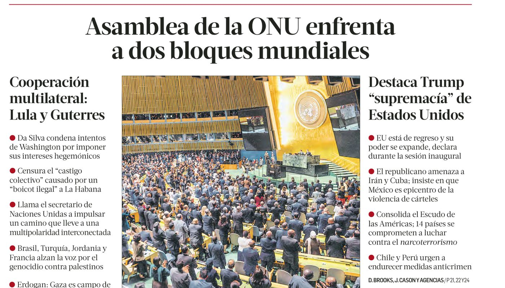
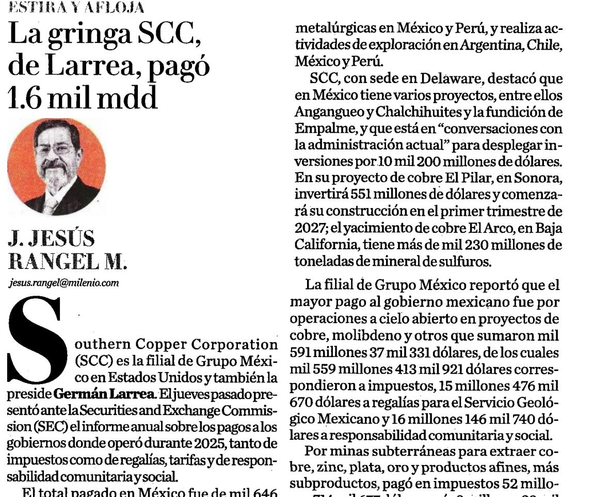

Miércoles 23 de septiembre de 2026
Once recortes, seis armas
Salieron todos del mismo resumen de prensa: primeras planas, secciones financieras y columnas de un miércoles cualquiera. Puestos juntos aparece lo que ninguno dice solo: finanzas, energía, comercio, inversión, seguridad e información operando a la vez sobre el mismo país.
Cómo se mueveCon las flechas ← → o deslizando en el celular. La tecla F abre pantalla completa.
Recorte 01 · la escalera del artículo

«Si es necesario, usaremos a nuestro Ejército». Desde enero de 2025 los cárteles están designados organizaciones terroristas. Esa etiqueta no es retórica: es la llave que abre la caja de herramientas financieras que el artículo describe en la página 12. Primero terroristas, luego bancos, luego países.
El Universal · 1.ª plana y Mundo A13
Recorte 02 · sanciones y activos

Catorce países, veinticuatro grupos, activos congelados. El Escudo de las Américas pacta sanciones conjuntas. Congelar activos sólo funciona si existe un punto por el que todo el dinero tiene que pasar — y ese punto es el sistema del dólar. La misma nota amenaza a Irán con «aniquilarlo»: el caso fundacional de la exclusión financiera, otra vez en escena.
La Razón · 1.ª plana, p. 22 · también 24 Horas, Mundo p. 12
Recorte 03 · el mercado pone precio

Un discurso movió el tipo de cambio. El peso cerró en 17.30, su nivel más débil en siete semanas, y fue la segunda divisa más depreciada del día. Los analistas lo atribuyen a «llamados a intensificar las presiones geopolíticas y económicas». Aquí se ve la frase del artículo funcionando: la interdependencia pasó de promesa a amenaza, y el mercado le pone precio a esa amenaza el mismo día.
El Universal · Cartera A22 · también Excélsior, Dinero
Recorte 04 · medidas de exportación

38 % del diésel que consume México viene de Estados Unidos. China usó las tierras raras; Estados Unidos podría usar el diésel. Pero aquí conviene aplicar la distinción de la página 15: ¿el diésel es un nodo de red o una mercancía sustituible? De la respuesta depende cuánto dura el arma.
El Economista · 1.ª plana, p. 26
Recorte 05 · la pregunta del día

La columna pregunta exactamente lo que el artículo responde. Daniel Gros duda del poder chino sobre las tierras raras. Farrell y Newman contestarían que está mirando el mineral y no el ecosistema: China no lo posee todo, pero domina la extracción, el procesamiento y el equipo con el que se procesa — y prohibió exportar ese equipo.
El Economista · Opinión, p. 35
Recorte 06 · el stack alternativo
Alibaba presenta el chip de IA más potente de China. Esto es el paso 3 del ciclo: el blanco aprende. Cada control de exportación que buscaba frenar a China le dio una razón para construir su propio stack. El chip de ayer es el resultado de las restricciones de hace seis años.
Reforma · Negocios (AP)
Recorte 07 · dentro del stack estadounidense

México crece porque le vende a la inteligencia artificial de Estados Unidos. Las exportaciones de CPU y servidores ya superan a las automotrices. Pero HR Ratings advierte que esas mercancías incorporan componentes importados y no suman valor agregado nacional, y la OCDE avisa que la incertidumbre del T-MEC frena el comercio regional. Estás dentro del stack: eso protege mientras el hegemón quiera.
El Universal · Cartera · también El Economista y La Razón, Negocios p. 19
Recorte 08 · concentración

48 % de la inversión extranjera del semestre vino de un solo país. La centralización es lo que vuelve armable una red. Vale para SWIFT y vale para la inversión: mientras más concentrado esté el origen, más corta es la palanca de quien lo controla.
El Economista · 1.ª plana, p. 36
Recorte 09 · la fragmentación, en marcha

Canadá busca a la Unión Europea. Quiere llevar hacia Europa sus cadenas de energía, inteligencia artificial, defensa y minerales críticos. Es la respuesta de un aliado tratado como vasallo, y es exactamente la fragmentación que el artículo anuncia en la página 23. México, en cambio, negocia desde adentro.
Reforma · Capitanes, Negocios p. 3
Recorte 10 · dos bloques

«Supremacía» frente a «multipolaridad interconectada». En la misma sesión conviven la declaración de que el poder estadounidense se expande, la condena de Lula a los intereses hegemónicos y el llamado de Guterres. Es la disyuntiva final del artículo puesta en dos columnas de periódico: coerción agresiva y declive que se refuerzan, o distensión y control de armas económicas.
La Jornada · 1.ª plana y pp. 21—24
Recorte 11 · el panóptico

Lo que Estados Unidos sabe de México y México no. Southern Copper, con sede en Delaware, reporta a la SEC cuánto pagó a cada gobierno donde opera: 1 646.8 millones de dólares en México durante 2025. Ese informe no es obligatorio en México. Jurisdicción sobre el nodo, información sobre todos: la otra cara del arma, la que no cierra ninguna llave pero lo ve todo.
Milenio · «Estira y afloja», Negocios p. 20
Para cerrar el visor
Un miércoles, seis palancas
El artículo casi no menciona a México: aparece una vez, en el fallo de la Corte de Comercio Internacional sobre los aranceles. La prensa del día lo pone en el centro de todo.
- Si tuvieras que ordenar estos once recortes de la palanca más fácil de usar a la más difícil, ¿en qué orden quedarían? Defiéndelo.
- ¿Cuál de estas armas tocaría primero a la empresa en la que te ves trabajando dentro de cinco años?